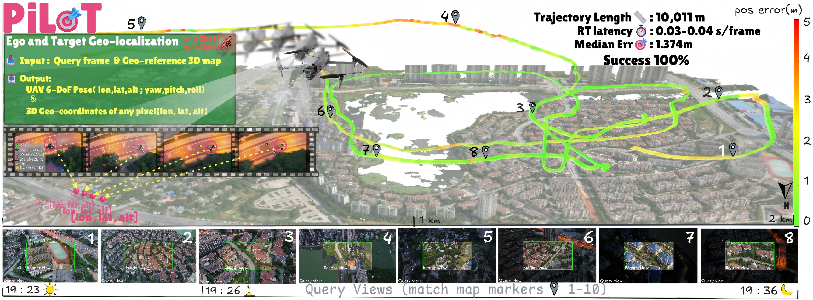
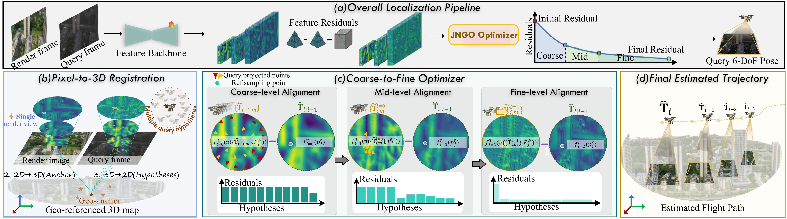

Conventional UAV geo-localization relies on decoupled GNSS-VIO pipelines and active sensors, which are prone to failure in GNSS-denied environments. In this work, we present PiLoT, a unified framework that directly registers live video against geo-referenced 3D maps, breaking the traditional dependency on GNSS. We introduce a dual-thread engine to decouple map rendering from localization, maintaining high accuracy at low latency. By leveraging a large-scale synthetic dataset and a joint neural-guided stochastic optimizer, PiLoT achieves drift-free, real-time, and long-term ego and target geo-localization across diverse and challenging environments.

Given a geo-referenced 3D map, a monocular video stream with known camera intrinsics, and a single pose prior for the first frame, we address UAV-based ego localization and target geo-localization without GNSS or IMU. Our goals are twofold: (1) estimate the camera pose for every query frame, and (2) enable precise pixel-to-geo projection that maps any query pixel on each frame to real-world coordinates (longitude, latitude, altitude).
We generate a new, million-scale synthetic dataset by simulating flights over vast, photorealistic global terrains. Our dataset provides RGB and pixel-wise depth images captured along realistic UAV trajectories under diverse visual conditions (e.g., scenes, weather, lighting). Crucially, we provide precise and geometrically-consistent ground truth, including absolute camera poses, all rigorously validated through reprojection.
@inproceedings{cheng2026pilot,
author = {Cheng, Xiaoya and Wang, Long and Liu, Yan and Liu, Xinyi and Tan, Hanlin and Liu, Yu and Zhang, Maojun and Yan, Shen},
title = {PiLoT: Neural Pixel-to-3D Registration for UAV-based Ego and Target Geo-localization},
booktitle = {Proceedings of the IEEE/CVF Conference on Computer Vision and Pattern Recognition (CVPR)},
year = {2026},
}
PiLoT takes PixLoc as its code backbone and DeepAC as the training framework. Thanks to the authors for the open-source release of their excellent work. We are also grateful to OpenSceneGraph for the open-source library used to build our rendering engine. We sincerely thank Cesium for Unreal for providing the data platform and Google Earth for providing the data source. This website template is borrowed from longvolcap.